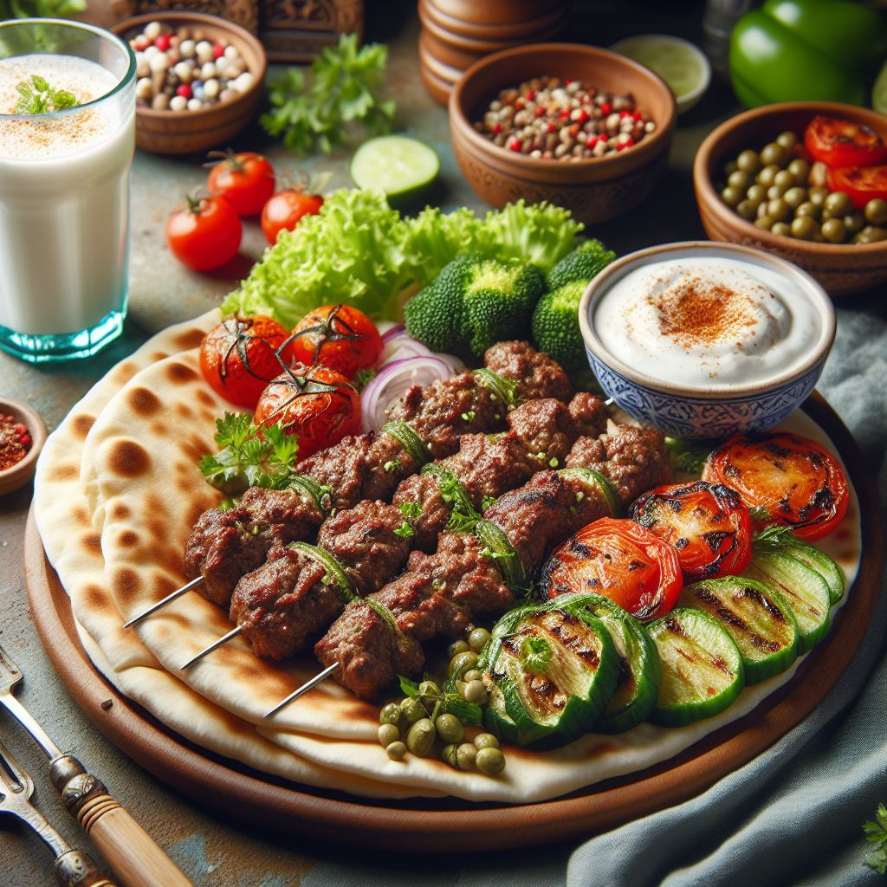

期末實作測試 學號:000000000 姓名:朱晉德
料理陳列展示
土耳其風味烤羊肉串
準備材料
- 羊肉塊
- 橄欖油
- 鹽和胡椒
- 烤肉香料（例如小茴香、胡荽子、辣椒粉等）醬油
步驟
- 在羊肉塊上塗抹橄欖油，然後均勻地撒上鹽、胡椒和烤肉香料。
- 將調味過的羊肉塊穿在烤肉串上。
- 熱烤箱至高溫，將羊肉串放在烤盤上，以中高溫烤至金黃酥脆，確保肉質熟透。

典故和好處
土耳其烤肉在土耳其文化中佔有重要地位，
烤肉串是一種受歡迎的烹飪方式。羊肉在土耳其菜中被廣泛使用，
因其獨特的風味而受到讚賞。
羊肉含有豐富的蛋白質和鐵質，有助於肌肉生長和血紅素生成。
此外，烤羊肉串的烹調方式減少了對額外油脂的需求。